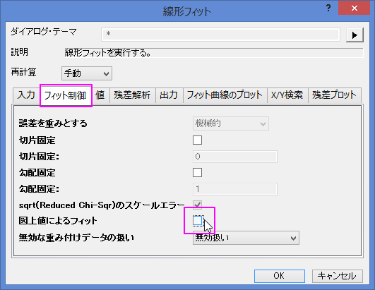
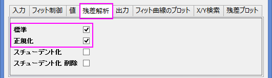
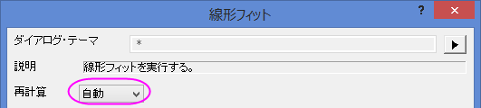
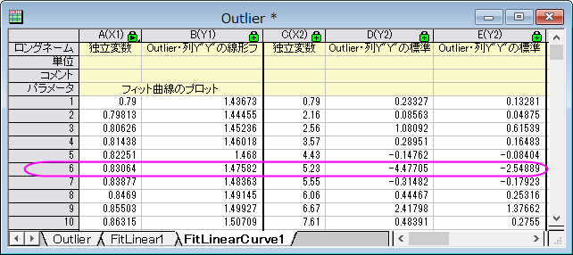
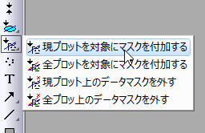
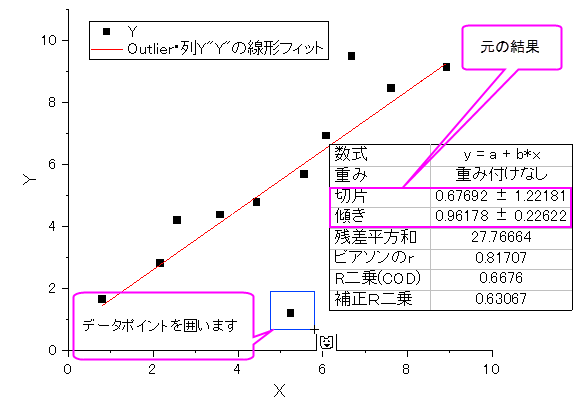
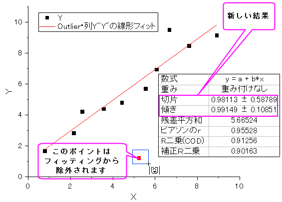

線形フィットと外れ値の除去
Linear-Fitting
サマリー
外れ値は、通常、他のデータポイントから離れたデータポイントまたは観測ポイントであり、例えば測定時の誤りなどで発生します。外れ値の識別と除去については、さまざまな議論が行われており、データの特徴が分かっている場合、モデルを使うことが広く行われています。
学習する項目
このチュートリアルでは、以下の項目について説明します。
- 一連のデータポイントで線形回帰を実行する方法
- 出力の残差テーブルを調べ、外れ値を識別する方法
- マスクツールを使って外れ値を除去する方法
- 再計算機能を使って、外れ値を除去した後に自動的に分析結果を更新する方法
このチュートリアルで説明している手順は、多項式回帰や非線形フィットでも利用できます。
ステップ
- 新しいワークブックを開き、Samples\Curve Fitting\Outlier.datファイルを開きます。
- 2列目をクリックして選択した後にメニューから操作を行います。作図：シンボル図：散布図と操作を行い、散布図を作成します。
- グラフをアクティブにしたうえで次の操作を行います。解析：フィット：線形フィットと選び、線形フィットダイアログを出します。以前に「線形フィット」ダイアログを使ったことがある場合、サブメニューが開きますので、「>>ダイアログを開く」サブメニューを選択します。
- フィットオプションブランチで、図上値によるフィットのチェックを外します。

- 『残差解析』ツリーノードを開き、『標準化』チェックボックスにチェックを付けます。

- ダイアログの一番上にある「再計算」ドロップダウンリストを「自動」にし、ダイアログの一番下にあるOKボタンをクリックします。ダイアログが閉じ、データに線形回帰が実行されます。

- データワークブックのFitLinearCurves1結果シートを選択し、右方向にスクロールして、「標準残差」列を表示します。この列の6行目の値が
-2.54889となっています。

- グラフをアクティブにして、「プロット操作・オブジェクト作成」ツールバーの「領域マスクツール」のボタンをマウスで数秒押します。フライアウトメニューの最初の項目「現プロットを対象にマスクを付加する」サブメニューを選択します。

- 上記のサブメニューを使って、グラフの6番目のデータポイントをクリックして、マスクします。

これにより線形フィットでの入力データが変わり、自動更新機能が働きます。このマスクしたデータを除外して線形フィットが再度実行されます。グラフ内のフィット曲線と貼り付けたパラメータが自動的に更新されます。結果のグラフは次のようになります。
